Префектура Канагава · Дзёгасима · где остановиться
Fufu Дзёгасима: первый морской курорт «Fufu» на краю полуострова Миура
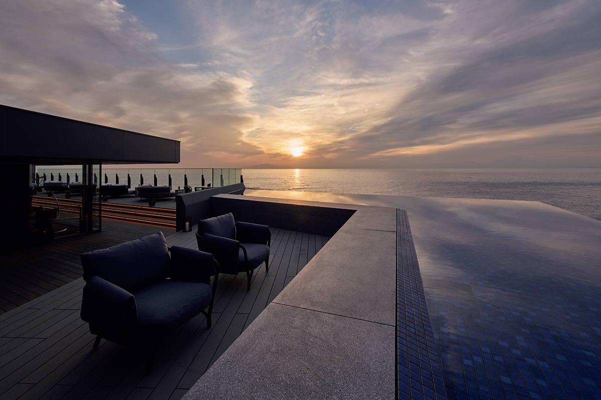
Сеть «Fufu» строила свои гостиницы в Хаконэ, Наре и Никко, а в феврале 2026 года впервые вышла к морю. «Fufu Дзёгасима Умикадзэ-но сирабэ» стоит на самой оконечности острова у южного края полуострова Миура, и из каждого её номера виден Тихий океан.
Остров
Скалы, которым пятнадцать миллионов лет
Дзёгасима это небольшой остров у южной оконечности полуострова Миура, к нему ведёт мост Дзёгасима-охаси. Берега здесь из причудливых скал, которые нависают над водой. Около 15 миллионов лет назад на дне южного моря извергались подводные вулканы, их отложения поднялись над водой, и за невообразимо долгое время из них сложился остров. После моста воздух будто меняется, а вдоль берега тянутся каменные плиты и гряды.
На мысе острова 27 февраля 2026 года открылся курорт «Fufu Дзёгасима Умикадзэ-но сирабэ». Название можно перевести как «мелодия морского ветра». «Fufu» держит небольшие роскошные гостиницы по всей стране и ставит их в местах с историей. У каждой свой характер, а общее у всех два: горячие источники и местная кухня в современной подаче. Эта гостиница первая в сети, которая стоит у моря.
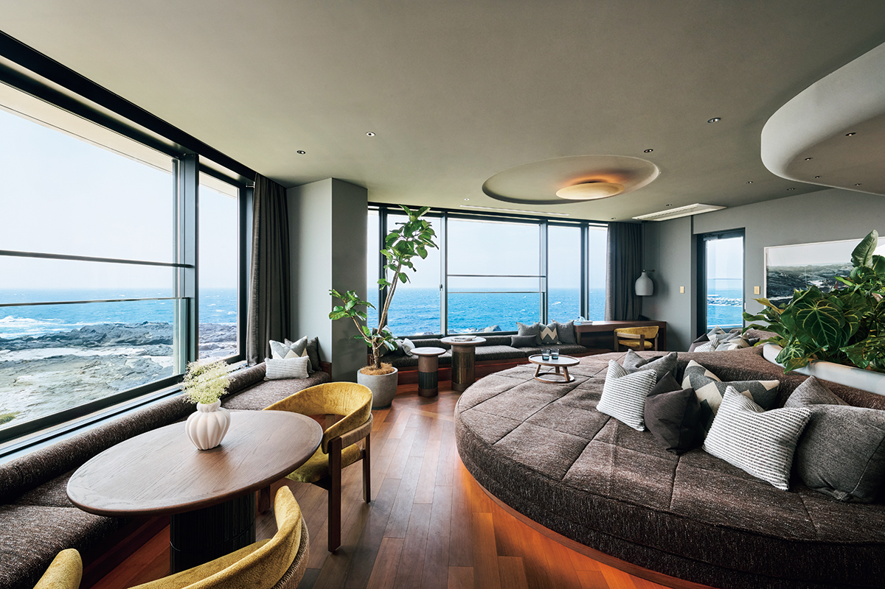
Гостей встречают в лаунже на первом этаже. Окна здесь ничем не заслонены, и море начинается сразу за стеклом. Дом смотрит на запад, на Тихий океан, поэтому отсюда видны и закат, и Фудзи.
Номера
Каждый номер смотрит на океан
Номеров всего 34, планировок семь, и все они сьюты площадью от 58 до 140 квадратных метров. Из окон виден горизонт и слоистые скалы вдоль берега, а с балкона слышен прибой и пахнет морем.
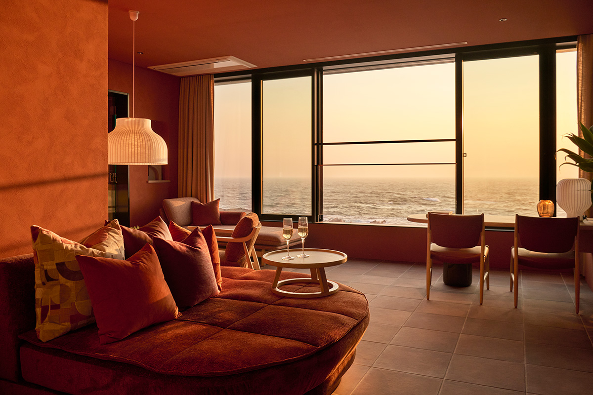
Журналистка, которая пишет о гостиницах и остановилась здесь вскоре после открытия, не увидела горизонта: его закрыли облака. Ей рассказали, что в ясный день отсюда открывается вид, похожий на гравюру «Большая волна в Канагаве» из серии «Тридцать шесть видов Фудзи». Её автор Кацусика Хокусай (1760–1849) был одним из главных мастеров японской гравюры укиё-э, и его волна с горой Фудзи вдали известна во всём мире.
Цвета номеров разные и взяты из окружающего пейзажа: тёплый бежевый, спокойный серо-бежевый, песочный. По словам создателей, это фон, который должен подчёркивать то, что за окном: море, небо, скалы и рифы. Акцентами служат мягкие землистые тона: терракота, жёлтый, синий, зелёный.
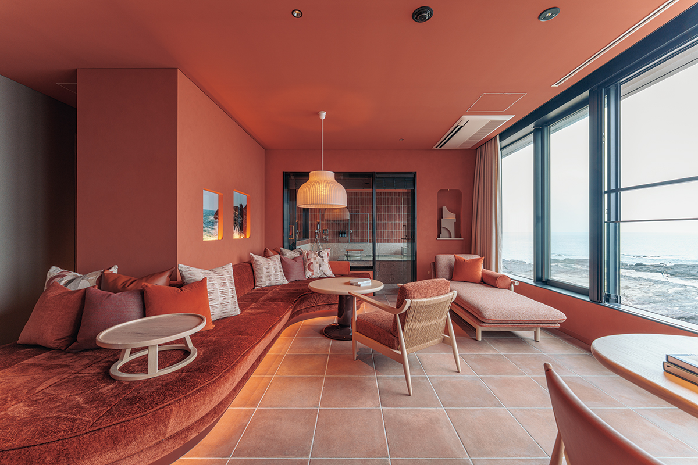
В каждую ванную подведён природный источник «Абурацубо онсэн». Вода поднимается с глубины около 1500 метров, из пластов группы Хаяма. Она хорошо прогревает тело, и в ней много метакремниевой кислоты, поэтому кожа после неё не сохнет. Лежишь в воде под шум прибоя, и кажется, будто купаешься в самом море.
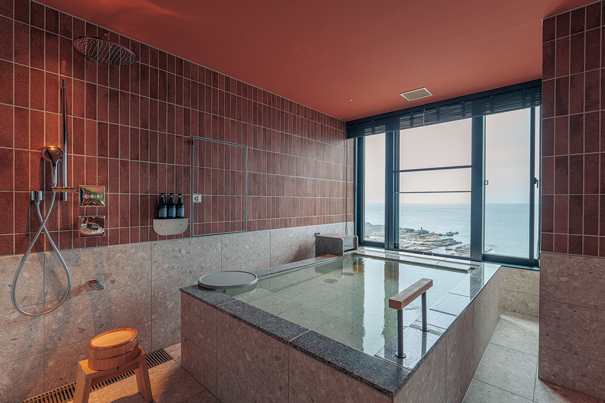
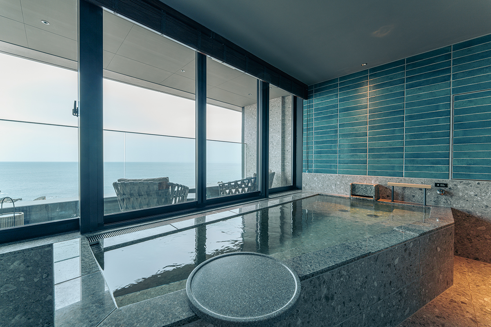
Крыша
Закат на четвёртом этаже
Лаунж на крыше занимает четвёртый этаж. Его бассейн-зеркало выложен тёмно-синей плиткой, и по воде скользят отражения света, ветра и облаков. Здесь есть стойка и диваны. В тихую ясную ночь с дивана видна лунная дорожка на воде.
Лаунж открыт с 6:00 до 20:00, напитки без ограничений подают с 14:00 до 19:30. Лучшее время здесь на закате. Сотрудники гостиницы предлагают даже арендовать весь лаунж на крыше, чтобы сделать предложение руки и сердца. Для тех, кому мало заката, гостиница устраивает дайвинг и рыбалку.
Ужин
Рыба одного из трёх глубоких заливов
Залив Сагами вместе с заливами Тояма и Суруга входит в тройку самых глубоких заливов Японии. В нём водится около 1600 видов рыб, примерно 40 процентов всех, что известны в стране. Из этого улова и продуктов со всей Японии шеф-повар и его команда готовят авторскую японскую кухню в ресторане Shioyui.
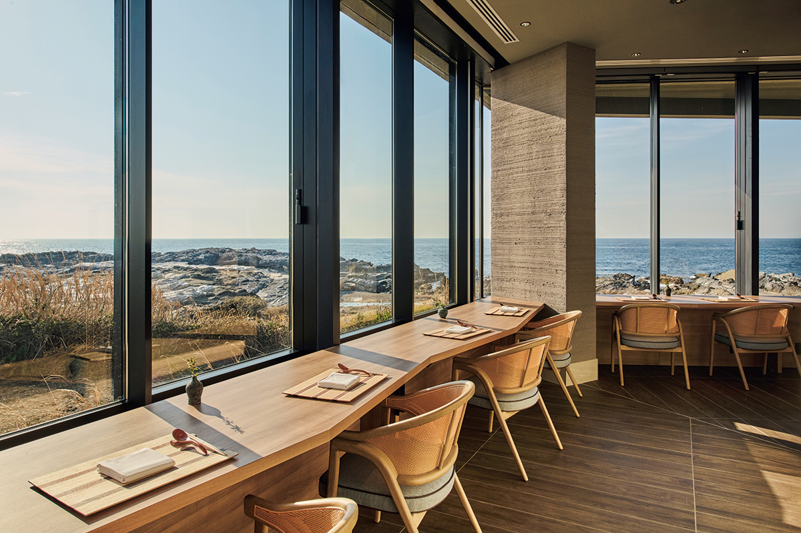
У входа стоит садок с живой рыбой, который напоминает о глубинах у берегов Дзёгасимы. В ресторане 90 мест: стойка, столы и отдельные комнаты. Стойка сделана из цельного каштана из префектуры Мияги возрастом 250 лет. Каштан не боится воды и гниения и считается символом долголетия. Главное здесь открытая кухня с очагом робата: рыбу и овощи жарят на углях бинтётан, и вкус от этого становится глубже.
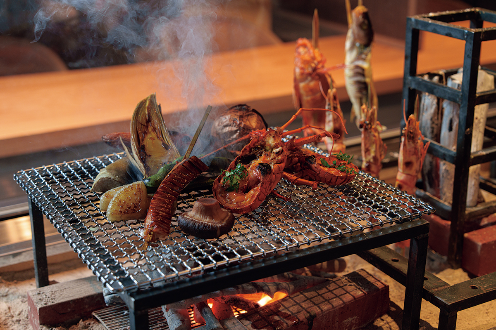
Ужин идёт по сезонному меню, к каждому блюду подбирают вино или сакэ. Февральское меню 2026 года начиналось с абалона на пару и креветки в соусе из молока, мисо и печени абалона, с весенними побегами и цветами рапса, в тарелке из фарфора Арита в форме раковины. Сашими здесь нарочно подают вторым: местный голубой тунец из Мисаки, кинмэдай, рыба-сабля, креветки ботан-эби, камбала и кальмар с четырьмя соусами.
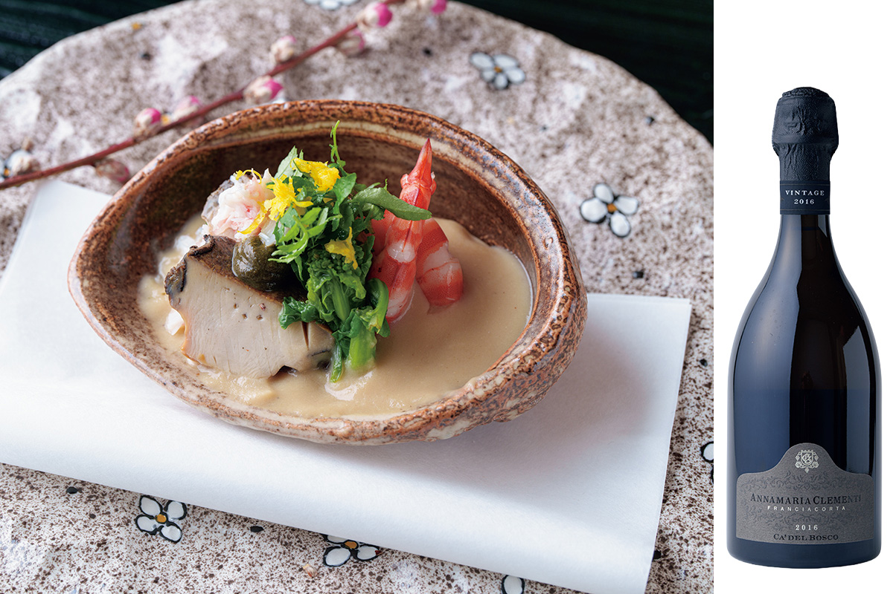
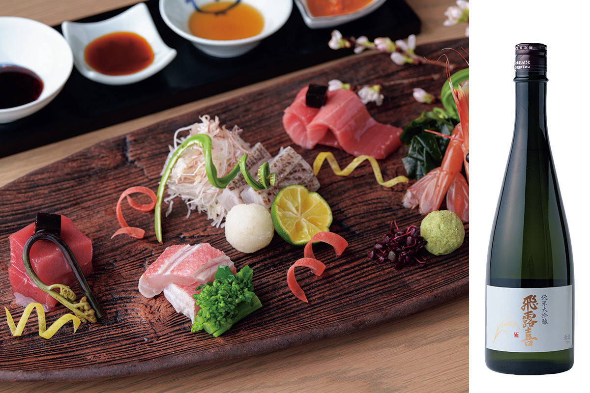
Потом шли прозрачный суп с саварой и молодым бамбуком, набор закусок с ракушками, морскими огурцами и крабом, а к тушёной рыбе нодогуро подали местное сакэ «Сагаминада». Ужин закончился рисом, сваренным в горшке с морским угрём, ракушками, рыбой-саблей, морским ежом и икрой, и лёгким десертом из фруктов и щербета.
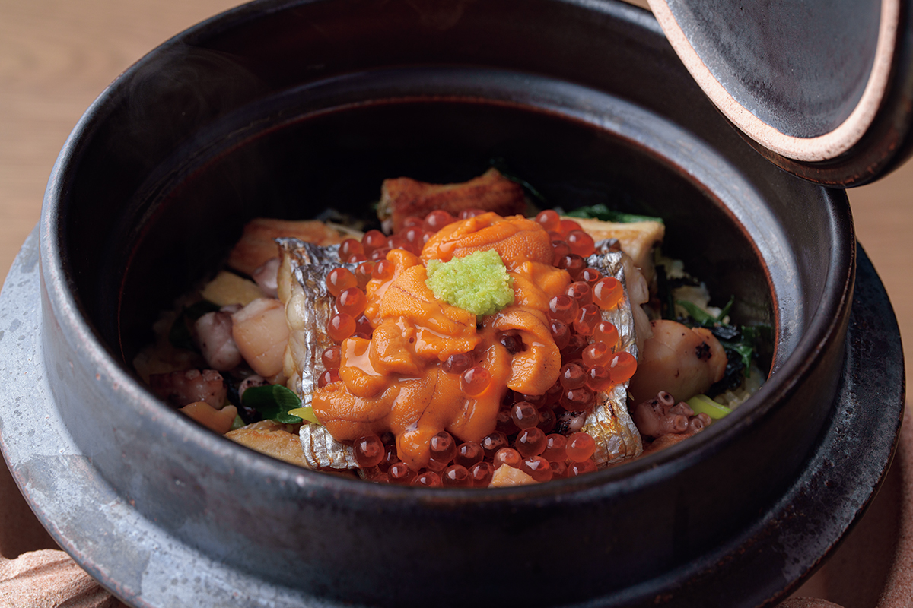
Бар
Коктейль с лимоном Миуры
В баре на первом этаже смешивают коктейли из местных фруктов. «KAIKO» готовят из лимона Миуры, джина, цитрусового биттера и содовой, в 2026 году он стоил 2000 иен. Барная стойка повторяет прибрежные скалы.
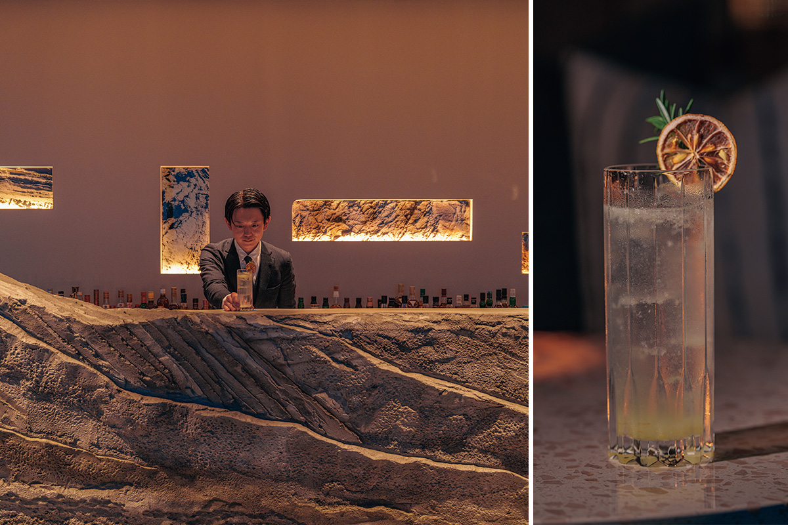
Fufu Дзёгасима Умикадзэ-но сирабэ
- Адрес
- префектура Канагава, Миура, Мисаки-мати, Дзёгасима, 693
- Телефон
- +81 570-0117-22 (10:00–20:00)
- Номера
- 34 номера, 7 типов
- Цены / Вход
- с ужином и завтраком от 49 500 иен с человека (от 99 000 иен за двоих), с налогом и обслуживанием, без налога на онсэн
- Заезд / выезд
- 15:00 / 11:00
- Как добраться
- на машине около 30–50 минут от развязки Хаяси дороги Миура-Дзюкан; на поезде до станции Мисакигути линии Кэйкю, оттуда около 20 минут на такси
- Сайт
- fufujogashima.jp
Фото: Ацуси Ямахира.